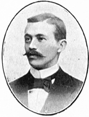
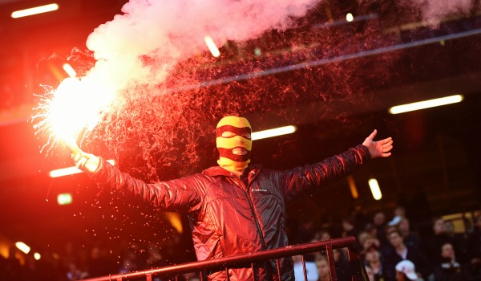

Över hundra år av stolthet
Från ett vardagsrum på Biblioteksgatan till att bli Sveriges mest omtalade klubb. AIK:s resa är en berättelse om passion, gemenskap och hjältar.
Från ett vardagsrum på Biblioteksgatan till att bli Sveriges mest omtalade klubb. AIK:s resa är en berättelse om passion, gemenskap och hjältar.
Det hela började den 15 februari 1891. Isidor Behrens grundade klubben tillsammans med sin bror Paul. Syftet var att skapa en förening som välkomnade alla idrotter, därav namnet Allmänna Idrottsklubben.

Genom decennierna har AIK samlat på sig titlar i en mängd olika sporter. Från de tidiga fotbollsgulden till hockeyns dominans på 80-talet och det magiska SM-guldet i fotboll 1998 och 2018.

AIK:s historia är lika mycket en historia om dess supportrar. Från gamla Råsunda till dagens läktarkultur har fansen alltid varit klubbens ryggrad.
